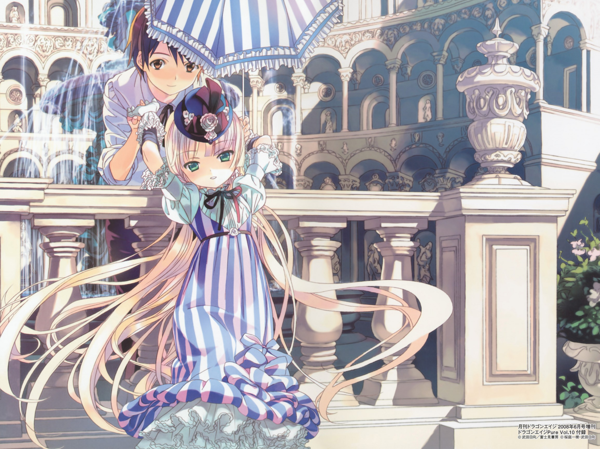
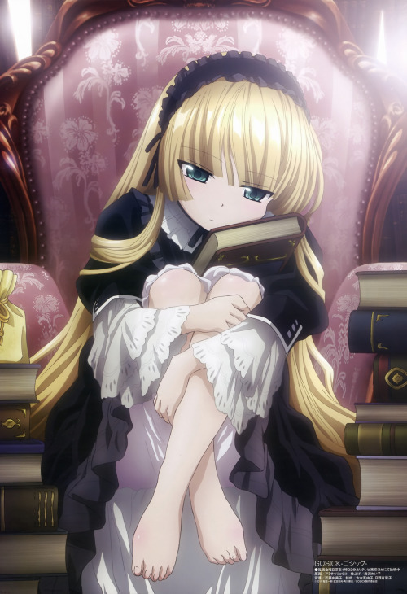

Les recommandations du Shoggoth
Gosick
Vous voyez Sherlock Holmes ? Imaginez-le en petite blonde de 15 ans
Diffusion : Hiver 2011
Format : une saison de 24 épisodes (ici)
Genres : Drame, Historique, Enigmes, Romance
Synopsis :
L'histoire débute en 1924, dans un petit pays européen fictif du nom de Saubure, coincé entre la France et l'Italie. Nous suivons ici Kazuya Kujou, étudiant japonais transféré dans l'école Sainte Marguerite. Dans ce pays, beaucoup de monde est passionné par les histoires de fantômes en tout genre, au point qu'il existe même un ministère de l'occulte. Il fera la rencontre de Victorique de Blois (ou Victorica, suivant les traductions), en haut d'une grande tour faisant office de bibliothèque. Leur but, à travers l'anime, va être la résoution d'affaires en tout genres.
Bon, pour être honnête, au niveau des enquêtes, ne vous attendez pas à avoir des énigmes qui vous feront vous arracher les cheveux, elles sont plutôt soft, surtout les premières. Et les personnages, pas très futés à ce niveau là, ont besoin de Victorique pour s'en sortir. Néanmoins, selon moi, là n'est pas l'intérêt principal de l'anime. En effet, on a un anime assez équilibré, sans avoir une romance proéminente, un protagoniste masculin pas trop en retrait (même si il semble un peu soumis, ça c'est du au côté tsundere de Victorique). Anime qui se laisse donc bien regarder, sans, pour moi, qu'il perde de qualité du fait que l'accent n'est pas vraiment mis sur un thème particulier.
Cet anime s'inscrit temporellement dans l'entre deux guerre (il a d'ailleurs réduit la durée, la seconde guerre mondiale arrive plus tôt que dans mes cours d'histoire !) il est donc logique que la guerre soit un thème assez présent, surtout dans la seconde partie de l'anime, et lui donne une dimension particulière qui m'a beaucoup plu.
Les OST sont très bien choisies, et remplissent correctement leur rôle dans l'anime. Petite mention spéciale pour le premier ending qui est ... voyez par vous mêmes !
Pour information, cette musique s'appelle Resuscitated Hope, et est chantée par Lisa Komine
C'est donc un anime que je conseillerais franchement, à un peu tout le monde, parce qu'il est bien dosé tant au niveau du drame que du reste, que l'histoire est intéressante, et qu'il se laisse aisément regarder.
Pour quelques images de plus